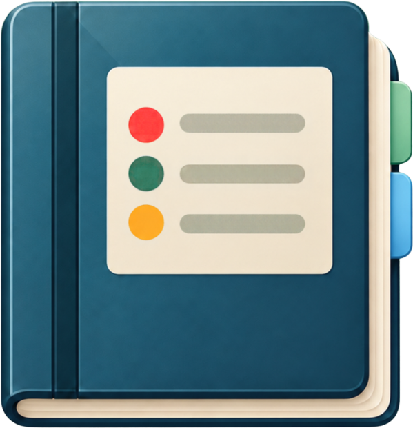
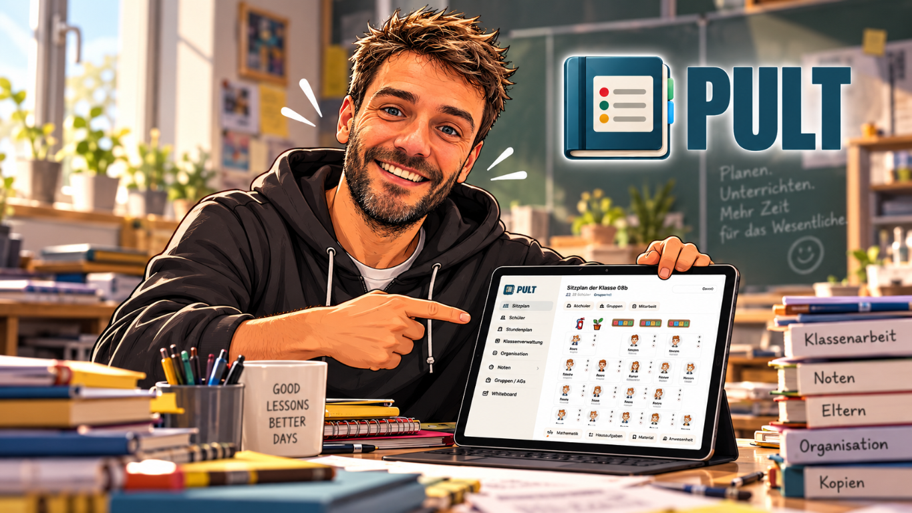

Mit einem Tipp erfasst
Mitarbeit, Hausaufgaben, Material und Anwesenheit hältst du direkt im Sitzplan fest – ohne Zettel und Strichlisten.

Organisiere deinen Unterricht auf dem iPad – und zeig deiner Klasse am Beamer Sitzplan, Gruppen und den Timer mit Arbeitsauftrag.
Eine Klasse kostenlos – dauerhaft.
Mitarbeit, Hausaufgaben, Material und Anwesenheit hältst du direkt im Sitzplan fest – ohne Zettel und Strichlisten.
Am Beamer sehen deine Schülerinnen und Schüler ihren Platz, ihre Gruppe, die Auslosung und den Timer mit Arbeitsauftrag.
Schülerinfos, Schülerberichte und Konferenzberichte hast du jederzeit griffbereit.
Deine Inhalte speichert PULT lokal auf dem iPad. Wenn aktiviert und eingeschlossen, können sie zusätzlich im Apple iCloud-Backup gesichert werden.
Für die Klasse
Zeig den Sitzplan am Beamer oder Display: Jede Schülerin und jeder Schüler findet sofort den eigenen Platz und die eigene Gruppe. Lose live aus, wer als Nächstes dran ist. Das ist fair und für alle nachvollziehbar. Der Timer läuft dabei sichtbar mit.
Vergrößere den Timer und deine Klasse sieht auf einen Blick, was zu tun ist: Arbeitsauftrag, Sozialform (Einzel-, Partner- oder Gruppenarbeit), Extras wie „Musik hören erlaubt“ und die verbleibende Zeit. Der Timer läuft in Sitzplan und Whiteboard weiter.
Läuft dezent am Rand weiter, während du Noten einträgst oder die nächste Stunde vorbereitest.
Hier stellst du alles ein: Zeit, Arbeitsauftrag, Sozialform und Extras.
Für die Klasse gemacht: gut lesbar am Beamer, mit allem, was die Schülerinnen und Schüler wissen müssen.
Für dich
Tippe im Sitzplan auf den Platz einer Schülerin oder eines Schülers: Mitarbeit mit Plus, Minus oder Null bewerten, vergessene Hausaufgaben oder fehlendes Material vermerken. Die Anwesenheit erfasst du in Sekunden – anwesend, fehlend oder verspätet. Alles landet automatisch beim richtigen Kind.
Trage schriftliche und mündliche Noten in einer übersichtlichen Tabelle ein. PULT berechnet die Durchschnitte nach deiner Gewichtung. Mit Notenblöcken fasst du Tests, Hausaufgaben und weitere Leistungen automatisch zu einer Gesamtnote zusammen. So siehst du jederzeit, wo jede Schülerin, jeder Schüler und die ganze Klasse steht. Die farbige Übersicht zeigt dir auf einen Blick, wie viele Noten bereits eingetragen wurden und welche noch fehlen.
Halte zu jeder Schülerin und jedem Schüler fest, was wichtig ist. Daraus erstellst du Schülerberichte für Elterngespräche und Konferenzberichte für die ganze Klasse, statt alles mühsam zusammenzusuchen. Für den Alltag legst du Klassenlisten an: Abhaklisten für Elternbriefe, Einverständniserklärungen oder eingesammeltes Geld und Notizlisten für alles andere.
Dein Stundenplan zeigt dir jeden Tag, welche Klasse als Nächstes dran ist – inklusive Vertretungen und freier Stunden. Für die perfekte Übersicht notierst du die Inhalte der Stunde kurz und knapp direkt im Stundenplan. Termine aus deinem Kalender erscheinen ebenfalls dort. Auch Pausenaufsichten und ein Kaffeedate mit deinen Lieblingskolleginnen und -kollegen haben hier ihren Platz. Mit einem Tipp öffnest du die Stunde samt vorbereiteter Aufgaben und Tafelbild.
Schreibe und zeichne mit dem Apple Pencil, und deine Klasse sieht am Beamer mit. Das freie Whiteboard ist sofort da für spontane Skizzen. Die Whiteboards im Stundenplan gehören fest zu einer Stunde. Du bereitest sie vor, entwickelst sie im Unterricht weiter und knüpfst beim nächsten Mal genau dort an. Der Timer läuft dabei sichtbar weiter.
PULT folgt dem hellen oder dunklen Modus deines iPads. Alle Funktionen bleiben gut lesbar, morgens im Klassenzimmer wie abends am Schreibtisch.

Hinter PULT
Ich bin Lehrkraft an einer Real- und Werkrealschule. PULT ist aus meiner eigenen Unterrichtspraxis entstanden – aus dem Wunsch, Leistungen transparenter zu dokumentieren, fairer zu bewerten und den Schulalltag einfacher zu organisieren.
Mir ist wichtig, dass Schülerinnen und Schüler nachvollziehen können, wo sie stehen. Transparenz schafft Orientierung und macht Leistungen besprechbar.
Es geht mir dabei nicht nur darum, schneller zu arbeiten. Wenn ich Leistungen zeitnah dokumentiere, entsteht eine bessere Informationsgrundlage: Bewertungen können authentischer, fundierter und fairer sein.
Und wenn weniger Papier und organisatorischer Aufwand anfallen, bleibt mehr Übersicht für das Wesentliche – den Unterricht und die Menschen darin.
Wenn ich nicht in der Schule bin, zieht es mich in die Berge. Ich bin gern mit dem Mountainbike oder beim Trailrunning unterwegs – meistens begleitet von unserer Hündin Coco.
Die App verarbeitet nur die Daten, die du selbst eingibst, zum Beispiel Sitzpläne, Namen von Schülerinnen und Schülern, Notizen und weitere planbezogene Informationen. PULT speichert deine Inhalte in der App lokal auf dem iPad. Wenn du das iCloud-Backup von Apple aktiviert hast und die App-Daten in die Gerätesicherung einbezogen werden, können sie auch dort gesichert werden. Diese Sicherung stellt Apple bereit, nicht PULT über einen eigenen Cloud-Speicherdienst. Ob die App-Daten gesichert werden, richtet sich nach deinen iPad-Einstellungen und den Vorgaben von iOS/iPadOS.
App-Updates werden automatisch über den App Store bereitgestellt. Dafür kann eine indirekte Verbindung zu Apples Update-Diensten entstehen; die von dir eingegebenen Inhalte werden dabei nicht übertragen.
Das Wichtigste zu PULT, deinen Daten und dem Einsatz im Unterricht.
Eine Klasse ist dauerhaft kostenlos. Weitere Klassen und Gruppen schaltest du mit einem einmaligen Kauf frei, ohne Abo.
PULT ist für das iPad gemacht.
Nein. PULT funktioniert vollständig offline, deine Daten liegen auf deinem iPad.
PULT speichert deine Inhalte in der App lokal auf dem iPad. Wenn du das iCloud-Backup von Apple aktiviert hast und die App-Daten in die Gerätesicherung einbezogen werden, können sie auch dort gesichert werden. Diese Sicherung stellt Apple bereit, nicht PULT über einen eigenen Cloud-Speicherdienst. Ob die App-Daten gesichert werden, richtet sich nach deinen iPad-Einstellungen und den Vorgaben von iOS/iPadOS.
Schreib an hallo@pult-app.de oder folge @pult.app auf Instagram für Tipps.
Eine Klasse ist dauerhaft kostenlos. Weitere Klassen und Gruppen schaltest du mit einem einmaligen Kauf frei, ohne Abo.
Schreib mir – ich lese jede Nachricht. Tipps zur Nutzung gibt es auf Instagram.
Bei Problemen hilft es, wenn du iPad-Modell, iPadOS-Version und App-Version mitschickst.
Beschreibe dein Anliegen möglichst genau. Ich bemühe mich um eine zeitnahe Rückmeldung.